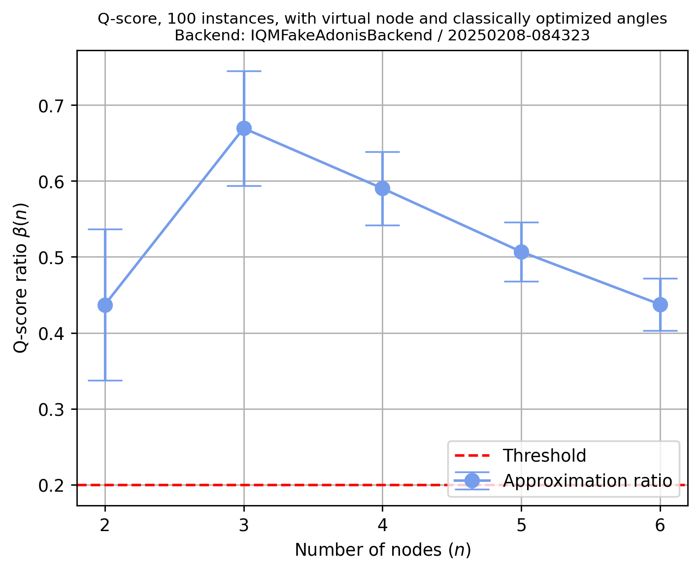

Q-Score#
%load_ext autoreload
%autoreload 2
from iqm.benchmarks.optimization.qscore import *
import random
Choose (or define) a backend#
backend = "fakeadonis"
#backend = "fakeapollo"
#backend = "garnet"
#backend = "deneb"
#backend = "pyrite"
Set IQM Token if using Resonance.#
import os
os.environ["IQM_TOKEN"] = "XXXXXXXXXXXXXX"
Qscore Configuration#
EXAMPLE_QSCORE = QScoreConfiguration(
num_instances = 100,
num_qaoa_layers= 1,
shots = 10000,
calset_id=None, # calibration set ID, default is None
min_num_nodes = 2,
max_num_nodes= None, # put it to run for all the node sizes
use_virtual_node = True,
use_classically_optimized_angles = True,
choose_qubits_routine = "custom",
custom_qubits_array=[
[2],
[2, 0],
[2, 0, 1],
[2, 0, 1, 3],
[2, 0, 1, 3, 4]],
seed = random.randint(1, 999999),
REM = True,
mit_shots=1000,
qpu_topology="crystal",
)
Run the experiment#
benchmark_qscore = QScoreBenchmark(backend, EXAMPLE_QSCORE)
run0_qscore = benchmark_qscore.run()
2025-02-08 08:43:24,527 - iqm.benchmarks.logging_config - INFO - Retrieving all counts
2025-02-08 08:43:24,549 - iqm.benchmarks.logging_config - INFO - REM: 4 calibration circuits to be executed!
2025-02-08 08:43:24,594 - iqm.benchmarks.logging_config - INFO - Retrieving all counts
2025-02-08 08:43:24,680 - iqm.benchmarks.logging_config - INFO - REM: 4 calibration circuits to be executed!
2025-02-08 08:43:24,801 - iqm.benchmarks.logging_config - INFO - Retrieving all counts
2025-02-08 08:43:24,829 - iqm.benchmarks.logging_config - INFO - REM: 4 calibration circuits to be executed!
2025-02-08 08:43:24,910 - iqm.benchmarks.logging_config - INFO - Retrieving all counts
2025-02-08 08:43:24,939 - iqm.benchmarks.logging_config - INFO - REM: 4 calibration circuits to be executed!
2025-02-08 08:43:25,094 - iqm.benchmarks.logging_config - INFO - Retrieving all counts
2025-02-08 08:43:25,177 - iqm.benchmarks.logging_config - INFO - REM: 4 calibration circuits to be executed!
2025-02-08 08:43:25,336 - iqm.benchmarks.logging_config - INFO - Retrieving all counts
2025-02-08 08:43:25,365 - iqm.benchmarks.logging_config - INFO - REM: 4 calibration circuits to be executed!
2025-02-08 08:43:25,417 - iqm.benchmarks.logging_config - INFO - Retrieving all counts
2025-02-08 08:43:25,446 - iqm.benchmarks.logging_config - INFO - REM: 4 calibration circuits to be executed!
2025-02-08 08:43:25,594 - iqm.benchmarks.logging_config - INFO - Retrieving all counts
2025-02-08 08:43:25,622 - iqm.benchmarks.logging_config - INFO - REM: 4 calibration circuits to be executed!
2025-02-08 08:43:25,743 - iqm.benchmarks.logging_config - INFO - Retrieving all counts
2025-02-08 08:43:25,772 - iqm.benchmarks.logging_config - INFO - REM: 4 calibration circuits to be executed!
2025-02-08 08:43:25,869 - iqm.benchmarks.logging_config - INFO - Retrieving all counts
2025-02-08 08:43:25,898 - iqm.benchmarks.logging_config - INFO - REM: 4 calibration circuits to be executed!
2025-02-08 08:43:26,076 - iqm.benchmarks.logging_config - INFO - Retrieving all counts
2025-02-08 08:43:26,106 - iqm.benchmarks.logging_config - INFO - REM: 4 calibration circuits to be executed!
2025-02-08 08:43:26,360 - iqm.benchmarks.logging_config - INFO - Retrieving all counts
2025-02-08 08:43:26,388 - iqm.benchmarks.logging_config - INFO - REM: 4 calibration circuits to be executed!
2025-02-08 08:43:26,433 - iqm.benchmarks.logging_config - INFO - Retrieving all counts
2025-02-08 08:43:26,462 - iqm.benchmarks.logging_config - INFO - REM: 4 calibration circuits to be executed!
2025-02-08 08:43:26,563 - iqm.benchmarks.logging_config - INFO - Retrieving all counts
2025-02-08 08:43:26,596 - iqm.benchmarks.logging_config - INFO - REM: 6 calibration circuits to be executed!
2025-02-08 08:43:26,655 - iqm.benchmarks.logging_config - INFO - Retrieving all counts
2025-02-08 08:43:26,686 - iqm.benchmarks.logging_config - INFO - REM: 6 calibration circuits to be executed!
2025-02-08 08:43:26,764 - iqm.benchmarks.logging_config - INFO - Retrieving all counts
2025-02-08 08:43:26,874 - iqm.benchmarks.logging_config - INFO - REM: 4 calibration circuits to be executed!
2025-02-08 08:43:26,931 - iqm.benchmarks.logging_config - INFO - Retrieving all counts
2025-02-08 08:43:26,963 - iqm.benchmarks.logging_config - INFO - REM: 6 calibration circuits to be executed!
2025-02-08 08:43:27,027 - iqm.benchmarks.logging_config - INFO - Retrieving all counts
2025-02-08 08:43:27,058 - iqm.benchmarks.logging_config - INFO - REM: 4 calibration circuits to be executed!
2025-02-08 08:43:27,108 - iqm.benchmarks.logging_config - INFO - Retrieving all counts
2025-02-08 08:43:27,194 - iqm.benchmarks.logging_config - INFO - REM: 4 calibration circuits to be executed!
2025-02-08 08:43:27,235 - iqm.benchmarks.logging_config - INFO - Retrieving all counts
2025-02-08 08:43:27,300 - iqm.benchmarks.logging_config - INFO - REM: 4 calibration circuits to be executed!
2025-02-08 08:43:27,370 - iqm.benchmarks.logging_config - INFO - Retrieving all counts
2025-02-08 08:43:27,399 - iqm.benchmarks.logging_config - INFO - REM: 4 calibration circuits to be executed!
2025-02-08 08:43:27,445 - iqm.benchmarks.logging_config - INFO - Retrieving all counts
2025-02-08 08:43:27,530 - iqm.benchmarks.logging_config - INFO - REM: 4 calibration circuits to be executed!
2025-02-08 08:43:27,573 - iqm.benchmarks.logging_config - INFO - Retrieving all counts
2025-02-08 08:43:27,602 - iqm.benchmarks.logging_config - INFO - REM: 4 calibration circuits to be executed!
2025-02-08 08:43:27,648 - iqm.benchmarks.logging_config - INFO - Retrieving all counts
2025-02-08 08:43:27,677 - iqm.benchmarks.logging_config - INFO - REM: 4 calibration circuits to be executed!
2025-02-08 08:43:27,720 - iqm.benchmarks.logging_config - INFO - Retrieving all counts
2025-02-08 08:43:27,805 - iqm.benchmarks.logging_config - INFO - REM: 4 calibration circuits to be executed!
2025-02-08 08:43:27,883 - iqm.benchmarks.logging_config - INFO - Retrieving all counts
2025-02-08 08:43:27,928 - iqm.benchmarks.logging_config - INFO - REM: 4 calibration circuits to be executed!
2025-02-08 08:43:27,979 - iqm.benchmarks.logging_config - INFO - Retrieving all counts
2025-02-08 08:43:28,008 - iqm.benchmarks.logging_config - INFO - REM: 4 calibration circuits to be executed!
2025-02-08 08:43:28,050 - iqm.benchmarks.logging_config - INFO - Retrieving all counts
2025-02-08 08:43:28,138 - iqm.benchmarks.logging_config - INFO - REM: 4 calibration circuits to be executed!
2025-02-08 08:43:28,193 - iqm.benchmarks.logging_config - INFO - Retrieving all counts
2025-02-08 08:43:28,223 - iqm.benchmarks.logging_config - INFO - REM: 6 calibration circuits to be executed!
2025-02-08 08:43:28,267 - iqm.benchmarks.logging_config - INFO - Retrieving all counts
2025-02-08 08:43:28,295 - iqm.benchmarks.logging_config - INFO - REM: 4 calibration circuits to be executed!
2025-02-08 08:43:28,353 - iqm.benchmarks.logging_config - INFO - Retrieving all counts
2025-02-08 08:43:28,494 - iqm.benchmarks.logging_config - INFO - REM: 4 calibration circuits to be executed!
2025-02-08 08:43:28,539 - iqm.benchmarks.logging_config - INFO - Retrieving all counts
2025-02-08 08:43:28,568 - iqm.benchmarks.logging_config - INFO - REM: 4 calibration circuits to be executed!
2025-02-08 08:43:28,616 - iqm.benchmarks.logging_config - INFO - Retrieving all counts
2025-02-08 08:43:28,645 - iqm.benchmarks.logging_config - INFO - REM: 4 calibration circuits to be executed!
2025-02-08 08:43:28,696 - iqm.benchmarks.logging_config - INFO - Retrieving all counts
2025-02-08 08:43:28,783 - iqm.benchmarks.logging_config - INFO - REM: 4 calibration circuits to be executed!
2025-02-08 08:43:28,829 - iqm.benchmarks.logging_config - INFO - Retrieving all counts
2025-02-08 08:43:28,858 - iqm.benchmarks.logging_config - INFO - REM: 4 calibration circuits to be executed!
2025-02-08 08:43:28,930 - iqm.benchmarks.logging_config - INFO - Retrieving all counts
2025-02-08 08:43:28,966 - iqm.benchmarks.logging_config - INFO - REM: 4 calibration circuits to be executed!
2025-02-08 08:43:29,036 - iqm.benchmarks.logging_config - INFO - Retrieving all counts
2025-02-08 08:43:29,120 - iqm.benchmarks.logging_config - INFO - REM: 4 calibration circuits to be executed!
2025-02-08 08:43:29,167 - iqm.benchmarks.logging_config - INFO - Retrieving all counts
2025-02-08 08:43:29,201 - iqm.benchmarks.logging_config - INFO - REM: 6 calibration circuits to be executed!
2025-02-08 08:43:29,264 - iqm.benchmarks.logging_config - INFO - Retrieving all counts
2025-02-08 08:43:29,293 - iqm.benchmarks.logging_config - INFO - REM: 4 calibration circuits to be executed!
2025-02-08 08:43:29,336 - iqm.benchmarks.logging_config - INFO - Retrieving all counts
2025-02-08 08:43:29,422 - iqm.benchmarks.logging_config - INFO - REM: 4 calibration circuits to be executed!
2025-02-08 08:43:29,472 - iqm.benchmarks.logging_config - INFO - Retrieving all counts
2025-02-08 08:43:29,505 - iqm.benchmarks.logging_config - INFO - REM: 6 calibration circuits to be executed!
2025-02-08 08:43:29,596 - iqm.benchmarks.logging_config - INFO - Retrieving all counts
2025-02-08 08:43:29,632 - iqm.benchmarks.logging_config - INFO - REM: 4 calibration circuits to be executed!
2025-02-08 08:43:29,693 - iqm.benchmarks.logging_config - INFO - Retrieving all counts
2025-02-08 08:43:29,778 - iqm.benchmarks.logging_config - INFO - REM: 4 calibration circuits to be executed!
2025-02-08 08:43:29,821 - iqm.benchmarks.logging_config - INFO - Retrieving all counts
2025-02-08 08:43:29,851 - iqm.benchmarks.logging_config - INFO - REM: 4 calibration circuits to be executed!
2025-02-08 08:43:29,897 - iqm.benchmarks.logging_config - INFO - Retrieving all counts
2025-02-08 08:43:29,929 - iqm.benchmarks.logging_config - INFO - REM: 6 calibration circuits to be executed!
2025-02-08 08:43:29,978 - iqm.benchmarks.logging_config - INFO - Retrieving all counts
2025-02-08 08:43:30,062 - iqm.benchmarks.logging_config - INFO - REM: 4 calibration circuits to be executed!
2025-02-08 08:43:30,115 - iqm.benchmarks.logging_config - INFO - Retrieving all counts
2025-02-08 08:43:30,148 - iqm.benchmarks.logging_config - INFO - REM: 6 calibration circuits to be executed!
2025-02-08 08:43:30,210 - iqm.benchmarks.logging_config - INFO - Retrieving all counts
2025-02-08 08:43:30,275 - iqm.benchmarks.logging_config - INFO - REM: 4 calibration circuits to be executed!
2025-02-08 08:43:30,326 - iqm.benchmarks.logging_config - INFO - Retrieving all counts
2025-02-08 08:43:30,417 - iqm.benchmarks.logging_config - INFO - REM: 4 calibration circuits to be executed!
2025-02-08 08:43:30,463 - iqm.benchmarks.logging_config - INFO - Retrieving all counts
2025-02-08 08:43:30,495 - iqm.benchmarks.logging_config - INFO - REM: 6 calibration circuits to be executed!
2025-02-08 08:43:30,540 - iqm.benchmarks.logging_config - INFO - Retrieving all counts
2025-02-08 08:43:30,570 - iqm.benchmarks.logging_config - INFO - REM: 4 calibration circuits to be executed!
2025-02-08 08:43:30,685 - iqm.benchmarks.logging_config - INFO - Retrieving all counts
2025-02-08 08:43:30,715 - iqm.benchmarks.logging_config - INFO - REM: 4 calibration circuits to be executed!
2025-02-08 08:43:30,760 - iqm.benchmarks.logging_config - INFO - Retrieving all counts
2025-02-08 08:43:30,789 - iqm.benchmarks.logging_config - INFO - REM: 4 calibration circuits to be executed!
2025-02-08 08:43:30,885 - iqm.benchmarks.logging_config - INFO - Retrieving all counts
2025-02-08 08:43:30,922 - iqm.benchmarks.logging_config - INFO - REM: 4 calibration circuits to be executed!
2025-02-08 08:43:31,028 - iqm.benchmarks.logging_config - INFO - Retrieving all counts
2025-02-08 08:43:31,057 - iqm.benchmarks.logging_config - INFO - REM: 4 calibration circuits to be executed!
2025-02-08 08:43:31,100 - iqm.benchmarks.logging_config - INFO - Retrieving all counts
2025-02-08 08:43:31,129 - iqm.benchmarks.logging_config - INFO - REM: 4 calibration circuits to be executed!
2025-02-08 08:43:31,169 - iqm.benchmarks.logging_config - INFO - Retrieving all counts
2025-02-08 08:43:31,198 - iqm.benchmarks.logging_config - INFO - REM: 4 calibration circuits to be executed!
2025-02-08 08:43:31,302 - iqm.benchmarks.logging_config - INFO - Retrieving all counts
2025-02-08 08:43:31,333 - iqm.benchmarks.logging_config - INFO - REM: 4 calibration circuits to be executed!
2025-02-08 08:43:31,378 - iqm.benchmarks.logging_config - INFO - Retrieving all counts
2025-02-08 08:43:31,408 - iqm.benchmarks.logging_config - INFO - REM: 4 calibration circuits to be executed!
2025-02-08 08:43:31,453 - iqm.benchmarks.logging_config - INFO - Retrieving all counts
2025-02-08 08:43:31,506 - iqm.benchmarks.logging_config - INFO - REM: 4 calibration circuits to be executed!
2025-02-08 08:43:31,651 - iqm.benchmarks.logging_config - INFO - Retrieving all counts
2025-02-08 08:43:31,683 - iqm.benchmarks.logging_config - INFO - REM: 6 calibration circuits to be executed!
2025-02-08 08:43:31,778 - iqm.benchmarks.logging_config - INFO - Retrieving all counts
2025-02-08 08:43:31,810 - iqm.benchmarks.logging_config - INFO - REM: 6 calibration circuits to be executed!
2025-02-08 08:43:31,857 - iqm.benchmarks.logging_config - INFO - Retrieving all counts
2025-02-08 08:43:31,885 - iqm.benchmarks.logging_config - INFO - REM: 4 calibration circuits to be executed!
2025-02-08 08:43:31,987 - iqm.benchmarks.logging_config - INFO - Retrieving all counts
2025-02-08 08:43:32,016 - iqm.benchmarks.logging_config - INFO - REM: 4 calibration circuits to be executed!
2025-02-08 08:43:32,066 - iqm.benchmarks.logging_config - INFO - Retrieving all counts
2025-02-08 08:43:32,098 - iqm.benchmarks.logging_config - INFO - REM: 6 calibration circuits to be executed!
2025-02-08 08:43:32,141 - iqm.benchmarks.logging_config - INFO - Retrieving all counts
2025-02-08 08:43:32,401 - iqm.benchmarks.logging_config - INFO - REM: 4 calibration circuits to be executed!
2025-02-08 08:43:32,448 - iqm.benchmarks.logging_config - INFO - Retrieving all counts
2025-02-08 08:43:32,478 - iqm.benchmarks.logging_config - INFO - REM: 4 calibration circuits to be executed!
2025-02-08 08:43:32,520 - iqm.benchmarks.logging_config - INFO - Retrieving all counts
2025-02-08 08:43:32,550 - iqm.benchmarks.logging_config - INFO - REM: 4 calibration circuits to be executed!
2025-02-08 08:43:32,597 - iqm.benchmarks.logging_config - INFO - Retrieving all counts
2025-02-08 08:43:32,689 - iqm.benchmarks.logging_config - INFO - REM: 6 calibration circuits to be executed!
2025-02-08 08:43:32,750 - iqm.benchmarks.logging_config - INFO - Retrieving all counts
2025-02-08 08:43:32,779 - iqm.benchmarks.logging_config - INFO - REM: 4 calibration circuits to be executed!
2025-02-08 08:43:32,824 - iqm.benchmarks.logging_config - INFO - Retrieving all counts
2025-02-08 08:43:32,905 - iqm.benchmarks.logging_config - INFO - REM: 4 calibration circuits to be executed!
2025-02-08 08:43:32,966 - iqm.benchmarks.logging_config - INFO - Retrieving all counts
2025-02-08 08:43:33,056 - iqm.benchmarks.logging_config - INFO - REM: 6 calibration circuits to be executed!
2025-02-08 08:43:33,104 - iqm.benchmarks.logging_config - INFO - Retrieving all counts
2025-02-08 08:43:33,135 - iqm.benchmarks.logging_config - INFO - REM: 4 calibration circuits to be executed!
2025-02-08 08:43:33,177 - iqm.benchmarks.logging_config - INFO - Retrieving all counts
2025-02-08 08:43:33,206 - iqm.benchmarks.logging_config - INFO - REM: 4 calibration circuits to be executed!
2025-02-08 08:43:33,251 - iqm.benchmarks.logging_config - INFO - Retrieving all counts
2025-02-08 08:43:33,338 - iqm.benchmarks.logging_config - INFO - REM: 4 calibration circuits to be executed!
2025-02-08 08:43:33,395 - iqm.benchmarks.logging_config - INFO - Retrieving all counts
2025-02-08 08:43:33,424 - iqm.benchmarks.logging_config - INFO - REM: 4 calibration circuits to be executed!
2025-02-08 08:43:33,493 - iqm.benchmarks.logging_config - INFO - Retrieving all counts
2025-02-08 08:43:33,528 - iqm.benchmarks.logging_config - INFO - REM: 4 calibration circuits to be executed!
2025-02-08 08:43:33,599 - iqm.benchmarks.logging_config - INFO - Retrieving all counts
2025-02-08 08:43:33,687 - iqm.benchmarks.logging_config - INFO - REM: 4 calibration circuits to be executed!
2025-02-08 08:43:33,736 - iqm.benchmarks.logging_config - INFO - Retrieving all counts
2025-02-08 08:43:33,765 - iqm.benchmarks.logging_config - INFO - REM: 4 calibration circuits to be executed!
2025-02-08 08:43:34,047 - iqm.benchmarks.logging_config - INFO - Retrieving all counts
2025-02-08 08:43:34,079 - iqm.benchmarks.logging_config - INFO - REM: 8 calibration circuits to be executed!
2025-02-08 08:43:34,135 - iqm.benchmarks.logging_config - INFO - Retrieving all counts
2025-02-08 08:43:34,228 - iqm.benchmarks.logging_config - INFO - REM: 8 calibration circuits to be executed!
2025-02-08 08:43:34,284 - iqm.benchmarks.logging_config - INFO - Retrieving all counts
2025-02-08 08:43:34,317 - iqm.benchmarks.logging_config - INFO - REM: 8 calibration circuits to be executed!
2025-02-08 08:43:34,417 - iqm.benchmarks.logging_config - INFO - Retrieving all counts
2025-02-08 08:43:34,452 - iqm.benchmarks.logging_config - INFO - REM: 6 calibration circuits to be executed!
2025-02-08 08:43:34,511 - iqm.benchmarks.logging_config - INFO - Retrieving all counts
2025-02-08 08:43:34,602 - iqm.benchmarks.logging_config - INFO - REM: 6 calibration circuits to be executed!
2025-02-08 08:43:34,649 - iqm.benchmarks.logging_config - INFO - Retrieving all counts
2025-02-08 08:43:34,678 - iqm.benchmarks.logging_config - INFO - REM: 4 calibration circuits to be executed!
2025-02-08 08:43:34,727 - iqm.benchmarks.logging_config - INFO - Retrieving all counts
2025-02-08 08:43:34,759 - iqm.benchmarks.logging_config - INFO - REM: 6 calibration circuits to be executed!
2025-02-08 08:43:34,809 - iqm.benchmarks.logging_config - INFO - Retrieving all counts
2025-02-08 08:43:34,902 - iqm.benchmarks.logging_config - INFO - REM: 6 calibration circuits to be executed!
2025-02-08 08:43:34,949 - iqm.benchmarks.logging_config - INFO - Retrieving all counts
2025-02-08 08:43:34,979 - iqm.benchmarks.logging_config - INFO - REM: 6 calibration circuits to be executed!
2025-02-08 08:43:35,066 - iqm.benchmarks.logging_config - INFO - Retrieving all counts
2025-02-08 08:43:35,104 - iqm.benchmarks.logging_config - INFO - REM: 4 calibration circuits to be executed!
2025-02-08 08:43:35,150 - iqm.benchmarks.logging_config - INFO - Retrieving all counts
2025-02-08 08:43:35,179 - iqm.benchmarks.logging_config - INFO - REM: 4 calibration circuits to be executed!
2025-02-08 08:43:35,278 - iqm.benchmarks.logging_config - INFO - Retrieving all counts
2025-02-08 08:43:35,307 - iqm.benchmarks.logging_config - INFO - REM: 4 calibration circuits to be executed!
2025-02-08 08:43:35,365 - iqm.benchmarks.logging_config - INFO - Retrieving all counts
2025-02-08 08:43:35,399 - iqm.benchmarks.logging_config - INFO - REM: 8 calibration circuits to be executed!
2025-02-08 08:43:35,453 - iqm.benchmarks.logging_config - INFO - Retrieving all counts
2025-02-08 08:43:35,544 - iqm.benchmarks.logging_config - INFO - REM: 6 calibration circuits to be executed!
2025-02-08 08:43:35,591 - iqm.benchmarks.logging_config - INFO - Retrieving all counts
2025-02-08 08:43:35,623 - iqm.benchmarks.logging_config - INFO - REM: 6 calibration circuits to be executed!
2025-02-08 08:43:35,710 - iqm.benchmarks.logging_config - INFO - Retrieving all counts
2025-02-08 08:43:35,751 - iqm.benchmarks.logging_config - INFO - REM: 8 calibration circuits to be executed!
2025-02-08 08:43:35,815 - iqm.benchmarks.logging_config - INFO - Retrieving all counts
2025-02-08 08:43:35,904 - iqm.benchmarks.logging_config - INFO - REM: 4 calibration circuits to be executed!
2025-02-08 08:43:35,957 - iqm.benchmarks.logging_config - INFO - Retrieving all counts
2025-02-08 08:43:35,989 - iqm.benchmarks.logging_config - INFO - REM: 6 calibration circuits to be executed!
2025-02-08 08:43:36,041 - iqm.benchmarks.logging_config - INFO - Retrieving all counts
2025-02-08 08:43:36,074 - iqm.benchmarks.logging_config - INFO - REM: 8 calibration circuits to be executed!
2025-02-08 08:43:36,129 - iqm.benchmarks.logging_config - INFO - Retrieving all counts
2025-02-08 08:43:36,162 - iqm.benchmarks.logging_config - INFO - REM: 8 calibration circuits to be executed!
2025-02-08 08:43:36,271 - iqm.benchmarks.logging_config - INFO - Retrieving all counts
2025-02-08 08:43:36,304 - iqm.benchmarks.logging_config - INFO - REM: 8 calibration circuits to be executed!
2025-02-08 08:43:36,397 - iqm.benchmarks.logging_config - INFO - Retrieving all counts
2025-02-08 08:43:36,434 - iqm.benchmarks.logging_config - INFO - REM: 8 calibration circuits to be executed!
2025-02-08 08:43:36,493 - iqm.benchmarks.logging_config - INFO - Retrieving all counts
2025-02-08 08:43:36,586 - iqm.benchmarks.logging_config - INFO - REM: 8 calibration circuits to be executed!
2025-02-08 08:43:36,640 - iqm.benchmarks.logging_config - INFO - Retrieving all counts
2025-02-08 08:43:36,674 - iqm.benchmarks.logging_config - INFO - REM: 8 calibration circuits to be executed!
2025-02-08 08:43:36,744 - iqm.benchmarks.logging_config - INFO - Retrieving all counts
2025-02-08 08:43:36,778 - iqm.benchmarks.logging_config - INFO - REM: 8 calibration circuits to be executed!
2025-02-08 08:43:36,826 - iqm.benchmarks.logging_config - INFO - Retrieving all counts
2025-02-08 08:43:36,913 - iqm.benchmarks.logging_config - INFO - REM: 4 calibration circuits to be executed!
2025-02-08 08:43:36,963 - iqm.benchmarks.logging_config - INFO - Retrieving all counts
2025-02-08 08:43:36,995 - iqm.benchmarks.logging_config - INFO - REM: 6 calibration circuits to be executed!
2025-02-08 08:43:37,086 - iqm.benchmarks.logging_config - INFO - Retrieving all counts
2025-02-08 08:43:37,131 - iqm.benchmarks.logging_config - INFO - REM: 8 calibration circuits to be executed!
2025-02-08 08:43:37,183 - iqm.benchmarks.logging_config - INFO - Retrieving all counts
2025-02-08 08:43:37,274 - iqm.benchmarks.logging_config - INFO - REM: 6 calibration circuits to be executed!
2025-02-08 08:43:37,325 - iqm.benchmarks.logging_config - INFO - Retrieving all counts
2025-02-08 08:43:37,357 - iqm.benchmarks.logging_config - INFO - REM: 6 calibration circuits to be executed!
2025-02-08 08:43:37,400 - iqm.benchmarks.logging_config - INFO - Retrieving all counts
2025-02-08 08:43:37,430 - iqm.benchmarks.logging_config - INFO - REM: 4 calibration circuits to be executed!
2025-02-08 08:43:37,480 - iqm.benchmarks.logging_config - INFO - Retrieving all counts
2025-02-08 08:43:37,569 - iqm.benchmarks.logging_config - INFO - REM: 6 calibration circuits to be executed!
2025-02-08 08:43:37,620 - iqm.benchmarks.logging_config - INFO - Retrieving all counts
2025-02-08 08:43:37,653 - iqm.benchmarks.logging_config - INFO - REM: 8 calibration circuits to be executed!
2025-02-08 08:43:37,716 - iqm.benchmarks.logging_config - INFO - Retrieving all counts
2025-02-08 08:43:37,779 - iqm.benchmarks.logging_config - INFO - REM: 4 calibration circuits to be executed!
2025-02-08 08:43:37,833 - iqm.benchmarks.logging_config - INFO - Retrieving all counts
2025-02-08 08:43:37,926 - iqm.benchmarks.logging_config - INFO - REM: 6 calibration circuits to be executed!
2025-02-08 08:43:37,974 - iqm.benchmarks.logging_config - INFO - Retrieving all counts
2025-02-08 08:43:38,004 - iqm.benchmarks.logging_config - INFO - REM: 4 calibration circuits to be executed!
2025-02-08 08:43:38,052 - iqm.benchmarks.logging_config - INFO - Retrieving all counts
2025-02-08 08:43:38,083 - iqm.benchmarks.logging_config - INFO - REM: 4 calibration circuits to be executed!
2025-02-08 08:43:38,142 - iqm.benchmarks.logging_config - INFO - Retrieving all counts
2025-02-08 08:43:38,176 - iqm.benchmarks.logging_config - INFO - REM: 8 calibration circuits to be executed!
2025-02-08 08:43:38,289 - iqm.benchmarks.logging_config - INFO - Retrieving all counts
2025-02-08 08:43:38,324 - iqm.benchmarks.logging_config - INFO - REM: 8 calibration circuits to be executed!
2025-02-08 08:43:38,416 - iqm.benchmarks.logging_config - INFO - Retrieving all counts
2025-02-08 08:43:38,467 - iqm.benchmarks.logging_config - INFO - REM: 8 calibration circuits to be executed!
2025-02-08 08:43:38,527 - iqm.benchmarks.logging_config - INFO - Retrieving all counts
2025-02-08 08:43:38,560 - iqm.benchmarks.logging_config - INFO - REM: 8 calibration circuits to be executed!
2025-02-08 08:43:38,677 - iqm.benchmarks.logging_config - INFO - Retrieving all counts
2025-02-08 08:43:38,710 - iqm.benchmarks.logging_config - INFO - REM: 8 calibration circuits to be executed!
2025-02-08 08:43:38,762 - iqm.benchmarks.logging_config - INFO - Retrieving all counts
2025-02-08 08:43:38,793 - iqm.benchmarks.logging_config - INFO - REM: 6 calibration circuits to be executed!
2025-02-08 08:43:38,847 - iqm.benchmarks.logging_config - INFO - Retrieving all counts
2025-02-08 08:43:38,881 - iqm.benchmarks.logging_config - INFO - REM: 8 calibration circuits to be executed!
2025-02-08 08:43:38,989 - iqm.benchmarks.logging_config - INFO - Retrieving all counts
2025-02-08 08:43:39,062 - iqm.benchmarks.logging_config - INFO - REM: 6 calibration circuits to be executed!
2025-02-08 08:43:39,121 - iqm.benchmarks.logging_config - INFO - Retrieving all counts
2025-02-08 08:43:39,152 - iqm.benchmarks.logging_config - INFO - REM: 4 calibration circuits to be executed!
2025-02-08 08:43:39,194 - iqm.benchmarks.logging_config - INFO - Retrieving all counts
2025-02-08 08:43:39,223 - iqm.benchmarks.logging_config - INFO - REM: 4 calibration circuits to be executed!
2025-02-08 08:43:39,341 - iqm.benchmarks.logging_config - INFO - Retrieving all counts
2025-02-08 08:43:39,374 - iqm.benchmarks.logging_config - INFO - REM: 8 calibration circuits to be executed!
2025-02-08 08:43:39,419 - iqm.benchmarks.logging_config - INFO - Retrieving all counts
2025-02-08 08:43:39,448 - iqm.benchmarks.logging_config - INFO - REM: 4 calibration circuits to be executed!
2025-02-08 08:43:39,502 - iqm.benchmarks.logging_config - INFO - Retrieving all counts
2025-02-08 08:43:39,570 - iqm.benchmarks.logging_config - INFO - REM: 8 calibration circuits to be executed!
2025-02-08 08:43:39,723 - iqm.benchmarks.logging_config - INFO - Retrieving all counts
2025-02-08 08:43:39,769 - iqm.benchmarks.logging_config - INFO - REM: 8 calibration circuits to be executed!
2025-02-08 08:43:39,820 - iqm.benchmarks.logging_config - INFO - Retrieving all counts
2025-02-08 08:43:39,850 - iqm.benchmarks.logging_config - INFO - REM: 4 calibration circuits to be executed!
2025-02-08 08:43:39,903 - iqm.benchmarks.logging_config - INFO - Retrieving all counts
2025-02-08 08:43:39,937 - iqm.benchmarks.logging_config - INFO - REM: 8 calibration circuits to be executed!
2025-02-08 08:43:40,047 - iqm.benchmarks.logging_config - INFO - Retrieving all counts
2025-02-08 08:43:40,081 - iqm.benchmarks.logging_config - INFO - REM: 8 calibration circuits to be executed!
2025-02-08 08:43:40,128 - iqm.benchmarks.logging_config - INFO - Retrieving all counts
2025-02-08 08:43:40,159 - iqm.benchmarks.logging_config - INFO - REM: 6 calibration circuits to be executed!
2025-02-08 08:43:40,210 - iqm.benchmarks.logging_config - INFO - Retrieving all counts
2025-02-08 08:43:40,241 - iqm.benchmarks.logging_config - INFO - REM: 6 calibration circuits to be executed!
2025-02-08 08:43:40,396 - iqm.benchmarks.logging_config - INFO - Retrieving all counts
2025-02-08 08:43:40,426 - iqm.benchmarks.logging_config - INFO - REM: 4 calibration circuits to be executed!
2025-02-08 08:43:40,474 - iqm.benchmarks.logging_config - INFO - Retrieving all counts
2025-02-08 08:43:40,507 - iqm.benchmarks.logging_config - INFO - REM: 6 calibration circuits to be executed!
2025-02-08 08:43:40,564 - iqm.benchmarks.logging_config - INFO - Retrieving all counts
2025-02-08 08:43:40,598 - iqm.benchmarks.logging_config - INFO - REM: 8 calibration circuits to be executed!
2025-02-08 08:43:40,711 - iqm.benchmarks.logging_config - INFO - Retrieving all counts
2025-02-08 08:43:40,742 - iqm.benchmarks.logging_config - INFO - REM: 6 calibration circuits to be executed!
2025-02-08 08:43:40,792 - iqm.benchmarks.logging_config - INFO - Retrieving all counts
2025-02-08 08:43:40,823 - iqm.benchmarks.logging_config - INFO - REM: 6 calibration circuits to be executed!
2025-02-08 08:43:40,871 - iqm.benchmarks.logging_config - INFO - Retrieving all counts
2025-02-08 08:43:40,928 - iqm.benchmarks.logging_config - INFO - REM: 6 calibration circuits to be executed!
2025-02-08 08:43:41,005 - iqm.benchmarks.logging_config - INFO - Retrieving all counts
2025-02-08 08:43:41,105 - iqm.benchmarks.logging_config - INFO - REM: 8 calibration circuits to be executed!
2025-02-08 08:43:41,155 - iqm.benchmarks.logging_config - INFO - Retrieving all counts
2025-02-08 08:43:41,189 - iqm.benchmarks.logging_config - INFO - REM: 8 calibration circuits to be executed!
2025-02-08 08:43:41,240 - iqm.benchmarks.logging_config - INFO - Retrieving all counts
2025-02-08 08:43:41,273 - iqm.benchmarks.logging_config - INFO - REM: 8 calibration circuits to be executed!
2025-02-08 08:43:41,327 - iqm.benchmarks.logging_config - INFO - Retrieving all counts
2025-02-08 08:43:41,423 - iqm.benchmarks.logging_config - INFO - REM: 8 calibration circuits to be executed!
2025-02-08 08:43:41,471 - iqm.benchmarks.logging_config - INFO - Retrieving all counts
2025-02-08 08:43:41,503 - iqm.benchmarks.logging_config - INFO - REM: 6 calibration circuits to be executed!
2025-02-08 08:43:41,590 - iqm.benchmarks.logging_config - INFO - Retrieving all counts
2025-02-08 08:43:41,643 - iqm.benchmarks.logging_config - INFO - REM: 8 calibration circuits to be executed!
2025-02-08 08:43:41,709 - iqm.benchmarks.logging_config - INFO - Retrieving all counts
2025-02-08 08:43:41,802 - iqm.benchmarks.logging_config - INFO - REM: 8 calibration circuits to be executed!
2025-02-08 08:43:41,847 - iqm.benchmarks.logging_config - INFO - Retrieving all counts
2025-02-08 08:43:41,876 - iqm.benchmarks.logging_config - INFO - REM: 4 calibration circuits to be executed!
2025-02-08 08:43:41,924 - iqm.benchmarks.logging_config - INFO - Retrieving all counts
2025-02-08 08:43:41,953 - iqm.benchmarks.logging_config - INFO - REM: 4 calibration circuits to be executed!
2025-02-08 08:43:42,000 - iqm.benchmarks.logging_config - INFO - Retrieving all counts
2025-02-08 08:43:42,090 - iqm.benchmarks.logging_config - INFO - REM: 4 calibration circuits to be executed!
2025-02-08 08:43:42,135 - iqm.benchmarks.logging_config - INFO - Retrieving all counts
2025-02-08 08:43:42,164 - iqm.benchmarks.logging_config - INFO - REM: 4 calibration circuits to be executed!
2025-02-08 08:43:42,363 - iqm.benchmarks.logging_config - INFO - Retrieving all counts
2025-02-08 08:43:42,410 - iqm.benchmarks.logging_config - INFO - REM: 8 calibration circuits to be executed!
2025-02-08 08:43:42,473 - iqm.benchmarks.logging_config - INFO - Retrieving all counts
2025-02-08 08:43:42,573 - iqm.benchmarks.logging_config - INFO - REM: 8 calibration circuits to be executed!
2025-02-08 08:43:42,634 - iqm.benchmarks.logging_config - INFO - Retrieving all counts
2025-02-08 08:43:42,669 - iqm.benchmarks.logging_config - INFO - REM: 8 calibration circuits to be executed!
2025-02-08 08:43:42,717 - iqm.benchmarks.logging_config - INFO - Retrieving all counts
2025-02-08 08:43:42,750 - iqm.benchmarks.logging_config - INFO - REM: 8 calibration circuits to be executed!
2025-02-08 08:43:42,798 - iqm.benchmarks.logging_config - INFO - Retrieving all counts
2025-02-08 08:43:42,831 - iqm.benchmarks.logging_config - INFO - REM: 6 calibration circuits to be executed!
2025-02-08 08:43:42,949 - iqm.benchmarks.logging_config - INFO - Retrieving all counts
2025-02-08 08:43:43,018 - iqm.benchmarks.logging_config - INFO - REM: 4 calibration circuits to be executed!
2025-02-08 08:43:43,074 - iqm.benchmarks.logging_config - INFO - Retrieving all counts
2025-02-08 08:43:43,103 - iqm.benchmarks.logging_config - INFO - REM: 4 calibration circuits to be executed!
2025-02-08 08:43:43,156 - iqm.benchmarks.logging_config - INFO - Retrieving all counts
2025-02-08 08:43:43,188 - iqm.benchmarks.logging_config - INFO - REM: 6 calibration circuits to be executed!
2025-02-08 08:43:43,301 - iqm.benchmarks.logging_config - INFO - Retrieving all counts
2025-02-08 08:43:43,332 - iqm.benchmarks.logging_config - INFO - REM: 6 calibration circuits to be executed!
2025-02-08 08:43:43,376 - iqm.benchmarks.logging_config - INFO - Retrieving all counts
2025-02-08 08:43:43,406 - iqm.benchmarks.logging_config - INFO - REM: 4 calibration circuits to be executed!
2025-02-08 08:43:43,449 - iqm.benchmarks.logging_config - INFO - Retrieving all counts
2025-02-08 08:43:43,479 - iqm.benchmarks.logging_config - INFO - REM: 4 calibration circuits to be executed!
2025-02-08 08:43:43,625 - iqm.benchmarks.logging_config - INFO - Retrieving all counts
2025-02-08 08:43:43,666 - iqm.benchmarks.logging_config - INFO - REM: 4 calibration circuits to be executed!
2025-02-08 08:43:43,734 - iqm.benchmarks.logging_config - INFO - Retrieving all counts
2025-02-08 08:43:43,769 - iqm.benchmarks.logging_config - INFO - REM: 8 calibration circuits to be executed!
2025-02-08 08:43:43,830 - iqm.benchmarks.logging_config - INFO - Retrieving all counts
2025-02-08 08:43:43,862 - iqm.benchmarks.logging_config - INFO - REM: 6 calibration circuits to be executed!
2025-02-08 08:43:43,914 - iqm.benchmarks.logging_config - INFO - Retrieving all counts
2025-02-08 08:43:44,006 - iqm.benchmarks.logging_config - INFO - REM: 6 calibration circuits to be executed!
2025-02-08 08:43:44,058 - iqm.benchmarks.logging_config - INFO - Retrieving all counts
2025-02-08 08:43:44,090 - iqm.benchmarks.logging_config - INFO - REM: 6 calibration circuits to be executed!
2025-02-08 08:43:44,139 - iqm.benchmarks.logging_config - INFO - Retrieving all counts
2025-02-08 08:43:44,170 - iqm.benchmarks.logging_config - INFO - REM: 6 calibration circuits to be executed!
2025-02-08 08:43:44,265 - iqm.benchmarks.logging_config - INFO - Retrieving all counts
2025-02-08 08:43:44,375 - iqm.benchmarks.logging_config - INFO - REM: 6 calibration circuits to be executed!
2025-02-08 08:43:44,421 - iqm.benchmarks.logging_config - INFO - Retrieving all counts
2025-02-08 08:43:44,450 - iqm.benchmarks.logging_config - INFO - REM: 4 calibration circuits to be executed!
2025-02-08 08:43:44,503 - iqm.benchmarks.logging_config - INFO - Retrieving all counts
2025-02-08 08:43:44,535 - iqm.benchmarks.logging_config - INFO - REM: 6 calibration circuits to be executed!
2025-02-08 08:43:44,585 - iqm.benchmarks.logging_config - INFO - Retrieving all counts
2025-02-08 08:43:44,678 - iqm.benchmarks.logging_config - INFO - REM: 6 calibration circuits to be executed!
2025-02-08 08:43:44,725 - iqm.benchmarks.logging_config - INFO - Retrieving all counts
2025-02-08 08:43:44,754 - iqm.benchmarks.logging_config - INFO - REM: 4 calibration circuits to be executed!
2025-02-08 08:43:45,158 - iqm.benchmarks.logging_config - INFO - Retrieving all counts
2025-02-08 08:43:45,193 - iqm.benchmarks.logging_config - INFO - REM: 10 calibration circuits to be executed!
2025-02-08 08:43:45,253 - iqm.benchmarks.logging_config - INFO - Retrieving all counts
2025-02-08 08:43:45,352 - iqm.benchmarks.logging_config - INFO - REM: 10 calibration circuits to be executed!
2025-02-08 08:43:45,417 - iqm.benchmarks.logging_config - INFO - Retrieving all counts
2025-02-08 08:43:45,453 - iqm.benchmarks.logging_config - INFO - REM: 10 calibration circuits to be executed!
2025-02-08 08:43:45,517 - iqm.benchmarks.logging_config - INFO - Retrieving all counts
2025-02-08 08:43:45,555 - iqm.benchmarks.logging_config - INFO - REM: 10 calibration circuits to be executed!
2025-02-08 08:43:45,617 - iqm.benchmarks.logging_config - INFO - Retrieving all counts
2025-02-08 08:43:45,654 - iqm.benchmarks.logging_config - INFO - REM: 10 calibration circuits to be executed!
2025-02-08 08:43:45,824 - iqm.benchmarks.logging_config - INFO - Retrieving all counts
2025-02-08 08:43:45,862 - iqm.benchmarks.logging_config - INFO - REM: 10 calibration circuits to be executed!
2025-02-08 08:43:45,934 - iqm.benchmarks.logging_config - INFO - Retrieving all counts
2025-02-08 08:43:45,972 - iqm.benchmarks.logging_config - INFO - REM: 8 calibration circuits to be executed!
2025-02-08 08:43:46,039 - iqm.benchmarks.logging_config - INFO - Retrieving all counts
2025-02-08 08:43:46,070 - iqm.benchmarks.logging_config - INFO - REM: 6 calibration circuits to be executed!
2025-02-08 08:43:46,196 - iqm.benchmarks.logging_config - INFO - Retrieving all counts
2025-02-08 08:43:46,236 - iqm.benchmarks.logging_config - INFO - REM: 10 calibration circuits to be executed!
2025-02-08 08:43:46,296 - iqm.benchmarks.logging_config - INFO - Retrieving all counts
2025-02-08 08:43:46,335 - iqm.benchmarks.logging_config - INFO - REM: 10 calibration circuits to be executed!
2025-02-08 08:43:46,392 - iqm.benchmarks.logging_config - INFO - Retrieving all counts
2025-02-08 08:43:46,551 - iqm.benchmarks.logging_config - INFO - REM: 10 calibration circuits to be executed!
2025-02-08 08:43:46,609 - iqm.benchmarks.logging_config - INFO - Retrieving all counts
2025-02-08 08:43:46,640 - iqm.benchmarks.logging_config - INFO - REM: 6 calibration circuits to be executed!
2025-02-08 08:43:46,699 - iqm.benchmarks.logging_config - INFO - Retrieving all counts
2025-02-08 08:43:46,733 - iqm.benchmarks.logging_config - INFO - REM: 8 calibration circuits to be executed!
2025-02-08 08:43:46,791 - iqm.benchmarks.logging_config - INFO - Retrieving all counts
2025-02-08 08:43:46,827 - iqm.benchmarks.logging_config - INFO - REM: 10 calibration circuits to be executed!
2025-02-08 08:43:46,951 - iqm.benchmarks.logging_config - INFO - Retrieving all counts
2025-02-08 08:43:46,984 - iqm.benchmarks.logging_config - INFO - REM: 8 calibration circuits to be executed!
2025-02-08 08:43:47,075 - iqm.benchmarks.logging_config - INFO - Retrieving all counts
2025-02-08 08:43:47,125 - iqm.benchmarks.logging_config - INFO - REM: 10 calibration circuits to be executed!
2025-02-08 08:43:47,177 - iqm.benchmarks.logging_config - INFO - Retrieving all counts
2025-02-08 08:43:47,210 - iqm.benchmarks.logging_config - INFO - REM: 6 calibration circuits to be executed!
2025-02-08 08:43:47,331 - iqm.benchmarks.logging_config - INFO - Retrieving all counts
2025-02-08 08:43:47,367 - iqm.benchmarks.logging_config - INFO - REM: 10 calibration circuits to be executed!
2025-02-08 08:43:47,428 - iqm.benchmarks.logging_config - INFO - Retrieving all counts
2025-02-08 08:43:47,464 - iqm.benchmarks.logging_config - INFO - REM: 10 calibration circuits to be executed!
2025-02-08 08:43:47,529 - iqm.benchmarks.logging_config - INFO - Retrieving all counts
2025-02-08 08:43:47,563 - iqm.benchmarks.logging_config - INFO - REM: 8 calibration circuits to be executed!
2025-02-08 08:43:47,684 - iqm.benchmarks.logging_config - INFO - Retrieving all counts
2025-02-08 08:43:47,717 - iqm.benchmarks.logging_config - INFO - REM: 8 calibration circuits to be executed!
2025-02-08 08:43:47,808 - iqm.benchmarks.logging_config - INFO - Retrieving all counts
2025-02-08 08:43:47,850 - iqm.benchmarks.logging_config - INFO - REM: 10 calibration circuits to be executed!
2025-02-08 08:43:47,917 - iqm.benchmarks.logging_config - INFO - Retrieving all counts
2025-02-08 08:43:47,953 - iqm.benchmarks.logging_config - INFO - REM: 10 calibration circuits to be executed!
2025-02-08 08:43:48,079 - iqm.benchmarks.logging_config - INFO - Retrieving all counts
2025-02-08 08:43:48,118 - iqm.benchmarks.logging_config - INFO - REM: 10 calibration circuits to be executed!
2025-02-08 08:43:48,176 - iqm.benchmarks.logging_config - INFO - Retrieving all counts
2025-02-08 08:43:48,213 - iqm.benchmarks.logging_config - INFO - REM: 10 calibration circuits to be executed!
2025-02-08 08:43:48,281 - iqm.benchmarks.logging_config - INFO - Retrieving all counts
2025-02-08 08:43:48,315 - iqm.benchmarks.logging_config - INFO - REM: 8 calibration circuits to be executed!
2025-02-08 08:43:48,376 - iqm.benchmarks.logging_config - INFO - Retrieving all counts
2025-02-08 08:43:48,534 - iqm.benchmarks.logging_config - INFO - REM: 8 calibration circuits to be executed!
2025-02-08 08:43:48,595 - iqm.benchmarks.logging_config - INFO - Retrieving all counts
2025-02-08 08:43:48,633 - iqm.benchmarks.logging_config - INFO - REM: 10 calibration circuits to be executed!
2025-02-08 08:43:48,687 - iqm.benchmarks.logging_config - INFO - Retrieving all counts
2025-02-08 08:43:48,721 - iqm.benchmarks.logging_config - INFO - REM: 8 calibration circuits to be executed!
2025-02-08 08:43:48,783 - iqm.benchmarks.logging_config - INFO - Retrieving all counts
2025-02-08 08:43:48,880 - iqm.benchmarks.logging_config - INFO - REM: 8 calibration circuits to be executed!
2025-02-08 08:43:48,946 - iqm.benchmarks.logging_config - INFO - Retrieving all counts
2025-02-08 08:43:48,980 - iqm.benchmarks.logging_config - INFO - REM: 8 calibration circuits to be executed!
2025-02-08 08:43:49,032 - iqm.benchmarks.logging_config - INFO - Retrieving all counts
2025-02-08 08:43:49,063 - iqm.benchmarks.logging_config - INFO - REM: 6 calibration circuits to be executed!
2025-02-08 08:43:49,151 - iqm.benchmarks.logging_config - INFO - Retrieving all counts
2025-02-08 08:43:49,205 - iqm.benchmarks.logging_config - INFO - REM: 10 calibration circuits to be executed!
2025-02-08 08:43:49,338 - iqm.benchmarks.logging_config - INFO - Retrieving all counts
2025-02-08 08:43:49,375 - iqm.benchmarks.logging_config - INFO - REM: 10 calibration circuits to be executed!
2025-02-08 08:43:49,434 - iqm.benchmarks.logging_config - INFO - Retrieving all counts
2025-02-08 08:43:49,468 - iqm.benchmarks.logging_config - INFO - REM: 8 calibration circuits to be executed!
2025-02-08 08:43:49,534 - iqm.benchmarks.logging_config - INFO - Retrieving all counts
2025-02-08 08:43:49,636 - iqm.benchmarks.logging_config - INFO - REM: 10 calibration circuits to be executed!
2025-02-08 08:43:49,696 - iqm.benchmarks.logging_config - INFO - Retrieving all counts
2025-02-08 08:43:49,734 - iqm.benchmarks.logging_config - INFO - REM: 10 calibration circuits to be executed!
2025-02-08 08:43:49,838 - iqm.benchmarks.logging_config - INFO - Retrieving all counts
2025-02-08 08:43:49,880 - iqm.benchmarks.logging_config - INFO - REM: 8 calibration circuits to be executed!
2025-02-08 08:43:49,954 - iqm.benchmarks.logging_config - INFO - Retrieving all counts
2025-02-08 08:43:49,992 - iqm.benchmarks.logging_config - INFO - REM: 10 calibration circuits to be executed!
2025-02-08 08:43:50,120 - iqm.benchmarks.logging_config - INFO - Retrieving all counts
2025-02-08 08:43:50,158 - iqm.benchmarks.logging_config - INFO - REM: 10 calibration circuits to be executed!
2025-02-08 08:43:50,209 - iqm.benchmarks.logging_config - INFO - Retrieving all counts
2025-02-08 08:43:50,243 - iqm.benchmarks.logging_config - INFO - REM: 8 calibration circuits to be executed!
2025-02-08 08:43:50,304 - iqm.benchmarks.logging_config - INFO - Retrieving all counts
2025-02-08 08:43:50,340 - iqm.benchmarks.logging_config - INFO - REM: 10 calibration circuits to be executed!
2025-02-08 08:43:50,446 - iqm.benchmarks.logging_config - INFO - Retrieving all counts
2025-02-08 08:43:50,571 - iqm.benchmarks.logging_config - INFO - REM: 10 calibration circuits to be executed!
2025-02-08 08:43:50,649 - iqm.benchmarks.logging_config - INFO - Retrieving all counts
2025-02-08 08:43:50,685 - iqm.benchmarks.logging_config - INFO - REM: 10 calibration circuits to be executed!
2025-02-08 08:43:50,734 - iqm.benchmarks.logging_config - INFO - Retrieving all counts
2025-02-08 08:43:50,768 - iqm.benchmarks.logging_config - INFO - REM: 6 calibration circuits to be executed!
2025-02-08 08:43:50,836 - iqm.benchmarks.logging_config - INFO - Retrieving all counts
2025-02-08 08:43:50,936 - iqm.benchmarks.logging_config - INFO - REM: 10 calibration circuits to be executed!
2025-02-08 08:43:50,994 - iqm.benchmarks.logging_config - INFO - Retrieving all counts
2025-02-08 08:43:51,025 - iqm.benchmarks.logging_config - INFO - REM: 6 calibration circuits to be executed!
2025-02-08 08:43:51,087 - iqm.benchmarks.logging_config - INFO - Retrieving all counts
2025-02-08 08:43:51,120 - iqm.benchmarks.logging_config - INFO - REM: 8 calibration circuits to be executed!
2025-02-08 08:43:51,221 - iqm.benchmarks.logging_config - INFO - Retrieving all counts
2025-02-08 08:43:51,337 - iqm.benchmarks.logging_config - INFO - REM: 6 calibration circuits to be executed!
2025-02-08 08:43:51,411 - iqm.benchmarks.logging_config - INFO - Retrieving all counts
2025-02-08 08:43:51,480 - iqm.benchmarks.logging_config - INFO - REM: 10 calibration circuits to be executed!
2025-02-08 08:43:51,538 - iqm.benchmarks.logging_config - INFO - Retrieving all counts
2025-02-08 08:43:51,572 - iqm.benchmarks.logging_config - INFO - REM: 8 calibration circuits to be executed!
2025-02-08 08:43:51,634 - iqm.benchmarks.logging_config - INFO - Retrieving all counts
2025-02-08 08:43:51,669 - iqm.benchmarks.logging_config - INFO - REM: 10 calibration circuits to be executed!
2025-02-08 08:43:51,810 - iqm.benchmarks.logging_config - INFO - Retrieving all counts
2025-02-08 08:43:51,847 - iqm.benchmarks.logging_config - INFO - REM: 10 calibration circuits to be executed!
2025-02-08 08:43:51,953 - iqm.benchmarks.logging_config - INFO - Retrieving all counts
2025-02-08 08:43:51,995 - iqm.benchmarks.logging_config - INFO - REM: 8 calibration circuits to be executed!
2025-02-08 08:43:52,061 - iqm.benchmarks.logging_config - INFO - Retrieving all counts
2025-02-08 08:43:52,098 - iqm.benchmarks.logging_config - INFO - REM: 10 calibration circuits to be executed!
2025-02-08 08:43:52,221 - iqm.benchmarks.logging_config - INFO - Retrieving all counts
2025-02-08 08:43:52,256 - iqm.benchmarks.logging_config - INFO - REM: 8 calibration circuits to be executed!
2025-02-08 08:43:52,310 - iqm.benchmarks.logging_config - INFO - Retrieving all counts
2025-02-08 08:43:52,346 - iqm.benchmarks.logging_config - INFO - REM: 10 calibration circuits to be executed!
2025-02-08 08:43:52,402 - iqm.benchmarks.logging_config - INFO - Retrieving all counts
2025-02-08 08:43:52,436 - iqm.benchmarks.logging_config - INFO - REM: 8 calibration circuits to be executed!
2025-02-08 08:43:52,559 - iqm.benchmarks.logging_config - INFO - Retrieving all counts
2025-02-08 08:43:52,592 - iqm.benchmarks.logging_config - INFO - REM: 8 calibration circuits to be executed!
2025-02-08 08:43:52,687 - iqm.benchmarks.logging_config - INFO - Retrieving all counts
2025-02-08 08:43:52,739 - iqm.benchmarks.logging_config - INFO - REM: 10 calibration circuits to be executed!
2025-02-08 08:43:52,807 - iqm.benchmarks.logging_config - INFO - Retrieving all counts
2025-02-08 08:43:52,844 - iqm.benchmarks.logging_config - INFO - REM: 10 calibration circuits to be executed!
2025-02-08 08:43:52,907 - iqm.benchmarks.logging_config - INFO - Retrieving all counts
2025-02-08 08:43:53,010 - iqm.benchmarks.logging_config - INFO - REM: 10 calibration circuits to be executed!
2025-02-08 08:43:53,066 - iqm.benchmarks.logging_config - INFO - Retrieving all counts
2025-02-08 08:43:53,100 - iqm.benchmarks.logging_config - INFO - REM: 8 calibration circuits to be executed!
2025-02-08 08:43:53,166 - iqm.benchmarks.logging_config - INFO - Retrieving all counts
2025-02-08 08:43:53,203 - iqm.benchmarks.logging_config - INFO - REM: 10 calibration circuits to be executed!
2025-02-08 08:43:53,258 - iqm.benchmarks.logging_config - INFO - Retrieving all counts
2025-02-08 08:43:53,420 - iqm.benchmarks.logging_config - INFO - REM: 10 calibration circuits to be executed!
2025-02-08 08:43:53,482 - iqm.benchmarks.logging_config - INFO - Retrieving all counts
2025-02-08 08:43:53,516 - iqm.benchmarks.logging_config - INFO - REM: 8 calibration circuits to be executed!
2025-02-08 08:43:53,576 - iqm.benchmarks.logging_config - INFO - Retrieving all counts
2025-02-08 08:43:53,611 - iqm.benchmarks.logging_config - INFO - REM: 8 calibration circuits to be executed!
2025-02-08 08:43:53,679 - iqm.benchmarks.logging_config - INFO - Retrieving all counts
2025-02-08 08:43:53,784 - iqm.benchmarks.logging_config - INFO - REM: 10 calibration circuits to be executed!
2025-02-08 08:43:53,837 - iqm.benchmarks.logging_config - INFO - Retrieving all counts
2025-02-08 08:43:53,874 - iqm.benchmarks.logging_config - INFO - REM: 10 calibration circuits to be executed!
2025-02-08 08:43:53,944 - iqm.benchmarks.logging_config - INFO - Retrieving all counts
2025-02-08 08:43:54,001 - iqm.benchmarks.logging_config - INFO - REM: 8 calibration circuits to be executed!
2025-02-08 08:43:54,072 - iqm.benchmarks.logging_config - INFO - Retrieving all counts
2025-02-08 08:43:54,111 - iqm.benchmarks.logging_config - INFO - REM: 10 calibration circuits to be executed!
2025-02-08 08:43:54,232 - iqm.benchmarks.logging_config - INFO - Retrieving all counts
2025-02-08 08:43:54,265 - iqm.benchmarks.logging_config - INFO - REM: 8 calibration circuits to be executed!
2025-02-08 08:43:54,318 - iqm.benchmarks.logging_config - INFO - Retrieving all counts
2025-02-08 08:43:54,350 - iqm.benchmarks.logging_config - INFO - REM: 6 calibration circuits to be executed!
2025-02-08 08:43:54,404 - iqm.benchmarks.logging_config - INFO - Retrieving all counts
2025-02-08 08:43:54,438 - iqm.benchmarks.logging_config - INFO - REM: 8 calibration circuits to be executed!
2025-02-08 08:43:54,556 - iqm.benchmarks.logging_config - INFO - Retrieving all counts
2025-02-08 08:43:54,593 - iqm.benchmarks.logging_config - INFO - REM: 10 calibration circuits to be executed!
2025-02-08 08:43:54,697 - iqm.benchmarks.logging_config - INFO - Retrieving all counts
2025-02-08 08:43:54,752 - iqm.benchmarks.logging_config - INFO - REM: 10 calibration circuits to be executed!
2025-02-08 08:43:54,829 - iqm.benchmarks.logging_config - INFO - Retrieving all counts
2025-02-08 08:43:54,865 - iqm.benchmarks.logging_config - INFO - REM: 10 calibration circuits to be executed!
2025-02-08 08:43:54,992 - iqm.benchmarks.logging_config - INFO - Retrieving all counts
2025-02-08 08:43:55,030 - iqm.benchmarks.logging_config - INFO - REM: 10 calibration circuits to be executed!
2025-02-08 08:43:55,092 - iqm.benchmarks.logging_config - INFO - Retrieving all counts
2025-02-08 08:43:55,124 - iqm.benchmarks.logging_config - INFO - REM: 8 calibration circuits to be executed!
2025-02-08 08:43:55,188 - iqm.benchmarks.logging_config - INFO - Retrieving all counts
2025-02-08 08:43:55,226 - iqm.benchmarks.logging_config - INFO - REM: 10 calibration circuits to be executed!
2025-02-08 08:43:55,277 - iqm.benchmarks.logging_config - INFO - Retrieving all counts
2025-02-08 08:43:55,375 - iqm.benchmarks.logging_config - INFO - REM: 8 calibration circuits to be executed!
2025-02-08 08:43:55,472 - iqm.benchmarks.logging_config - INFO - Retrieving all counts
2025-02-08 08:43:55,510 - iqm.benchmarks.logging_config - INFO - REM: 6 calibration circuits to be executed!
2025-02-08 08:43:55,570 - iqm.benchmarks.logging_config - INFO - Retrieving all counts
2025-02-08 08:43:55,601 - iqm.benchmarks.logging_config - INFO - REM: 6 calibration circuits to be executed!
2025-02-08 08:43:55,667 - iqm.benchmarks.logging_config - INFO - Retrieving all counts
2025-02-08 08:43:55,766 - iqm.benchmarks.logging_config - INFO - REM: 8 calibration circuits to be executed!
2025-02-08 08:43:55,830 - iqm.benchmarks.logging_config - INFO - Retrieving all counts
2025-02-08 08:43:55,867 - iqm.benchmarks.logging_config - INFO - REM: 10 calibration circuits to be executed!
2025-02-08 08:43:55,920 - iqm.benchmarks.logging_config - INFO - Retrieving all counts
2025-02-08 08:43:55,956 - iqm.benchmarks.logging_config - INFO - REM: 8 calibration circuits to be executed!
2025-02-08 08:43:56,002 - iqm.benchmarks.logging_config - INFO - Retrieving all counts
2025-02-08 08:43:56,189 - iqm.benchmarks.logging_config - INFO - REM: 4 calibration circuits to be executed!
2025-02-08 08:43:56,241 - iqm.benchmarks.logging_config - INFO - Retrieving all counts
2025-02-08 08:43:56,275 - iqm.benchmarks.logging_config - INFO - REM: 8 calibration circuits to be executed!
2025-02-08 08:43:56,355 - iqm.benchmarks.logging_config - INFO - Retrieving all counts
2025-02-08 08:43:56,391 - iqm.benchmarks.logging_config - INFO - REM: 10 calibration circuits to be executed!
2025-02-08 08:43:56,450 - iqm.benchmarks.logging_config - INFO - Retrieving all counts
2025-02-08 08:43:56,487 - iqm.benchmarks.logging_config - INFO - REM: 10 calibration circuits to be executed!
2025-02-08 08:43:56,616 - iqm.benchmarks.logging_config - INFO - Retrieving all counts
2025-02-08 08:43:56,656 - iqm.benchmarks.logging_config - INFO - REM: 10 calibration circuits to be executed!
2025-02-08 08:43:56,712 - iqm.benchmarks.logging_config - INFO - Retrieving all counts
2025-02-08 08:43:56,778 - iqm.benchmarks.logging_config - INFO - REM: 6 calibration circuits to be executed!
2025-02-08 08:43:56,849 - iqm.benchmarks.logging_config - INFO - Retrieving all counts
2025-02-08 08:43:56,887 - iqm.benchmarks.logging_config - INFO - REM: 10 calibration circuits to be executed!
2025-02-08 08:43:57,017 - iqm.benchmarks.logging_config - INFO - Retrieving all counts
2025-02-08 08:43:57,053 - iqm.benchmarks.logging_config - INFO - REM: 10 calibration circuits to be executed!
2025-02-08 08:43:57,106 - iqm.benchmarks.logging_config - INFO - Retrieving all counts
2025-02-08 08:43:57,137 - iqm.benchmarks.logging_config - INFO - REM: 6 calibration circuits to be executed!
2025-02-08 08:43:57,200 - iqm.benchmarks.logging_config - INFO - Retrieving all counts
2025-02-08 08:43:57,234 - iqm.benchmarks.logging_config - INFO - REM: 8 calibration circuits to be executed!
2025-02-08 08:43:57,361 - iqm.benchmarks.logging_config - INFO - Retrieving all counts
2025-02-08 08:43:57,397 - iqm.benchmarks.logging_config - INFO - REM: 10 calibration circuits to be executed!
2025-02-08 08:43:57,490 - iqm.benchmarks.logging_config - INFO - Retrieving all counts
2025-02-08 08:43:57,534 - iqm.benchmarks.logging_config - INFO - REM: 10 calibration circuits to be executed!
2025-02-08 08:43:57,603 - iqm.benchmarks.logging_config - INFO - Retrieving all counts
2025-02-08 08:43:57,638 - iqm.benchmarks.logging_config - INFO - REM: 8 calibration circuits to be executed!
Perform Analysis#
result0_qscore = benchmark_qscore.analyze()
2025-02-08 08:43:58,467 - iqm.benchmarks.logging_config - INFO - Q-Score = 2 passed with approximation ratio (Beta) 0.4370; Avg MaxCut size: 0.4700
2025-02-08 08:43:59,070 - iqm.benchmarks.logging_config - INFO - Q-Score = 3 passed with approximation ratio (Beta) 0.6695; Avg MaxCut size: 1.3692
2025-02-08 08:43:59,906 - iqm.benchmarks.logging_config - INFO - Q-Score = 4 passed with approximation ratio (Beta) 0.5902; Avg MaxCut size: 2.3404
2025-02-08 08:44:01,121 - iqm.benchmarks.logging_config - INFO - Q-Score = 5 passed with approximation ratio (Beta) 0.5068; Avg MaxCut size: 3.5085
2025-02-08 08:44:02,742 - iqm.benchmarks.logging_config - INFO - Q-Score = 6 passed with approximation ratio (Beta) 0.4374; Avg MaxCut size: 4.8942
result0_qscore.observations
[BenchmarkObservation(name='mean_approximation_ratio', value=0.43697610073325965, identifier=BenchmarkObservationIdentifier(qubit_indices=2), uncertainty=0.09963324394097106),
BenchmarkObservation(name='is_succesful', value='True', identifier=BenchmarkObservationIdentifier(qubit_indices=2), uncertainty=None),
BenchmarkObservation(name='Qscore_result', value=2, identifier=BenchmarkObservationIdentifier(qubit_indices=2), uncertainty=None),
BenchmarkObservation(name='mean_approximation_ratio', value=0.6694825328517715, identifier=BenchmarkObservationIdentifier(qubit_indices=3), uncertainty=0.07553199096996285),
BenchmarkObservation(name='is_succesful', value='True', identifier=BenchmarkObservationIdentifier(qubit_indices=3), uncertainty=None),
BenchmarkObservation(name='Qscore_result', value=3, identifier=BenchmarkObservationIdentifier(qubit_indices=3), uncertainty=None),
BenchmarkObservation(name='mean_approximation_ratio', value=0.5901951757699432, identifier=BenchmarkObservationIdentifier(qubit_indices=4), uncertainty=0.04806723107119834),
BenchmarkObservation(name='is_succesful', value='True', identifier=BenchmarkObservationIdentifier(qubit_indices=4), uncertainty=None),
BenchmarkObservation(name='Qscore_result', value=4, identifier=BenchmarkObservationIdentifier(qubit_indices=4), uncertainty=None),
BenchmarkObservation(name='mean_approximation_ratio', value=0.5067731707198324, identifier=BenchmarkObservationIdentifier(qubit_indices=5), uncertainty=0.03884606517763287),
BenchmarkObservation(name='is_succesful', value='True', identifier=BenchmarkObservationIdentifier(qubit_indices=5), uncertainty=None),
BenchmarkObservation(name='Qscore_result', value=5, identifier=BenchmarkObservationIdentifier(qubit_indices=5), uncertainty=None),
BenchmarkObservation(name='mean_approximation_ratio', value=0.4373922810576933, identifier=BenchmarkObservationIdentifier(qubit_indices=6), uncertainty=0.034249084355823),
BenchmarkObservation(name='is_succesful', value='True', identifier=BenchmarkObservationIdentifier(qubit_indices=6), uncertainty=None),
BenchmarkObservation(name='Qscore_result', value=6, identifier=BenchmarkObservationIdentifier(qubit_indices=6), uncertainty=None)]
result0_qscore.plot_all()
